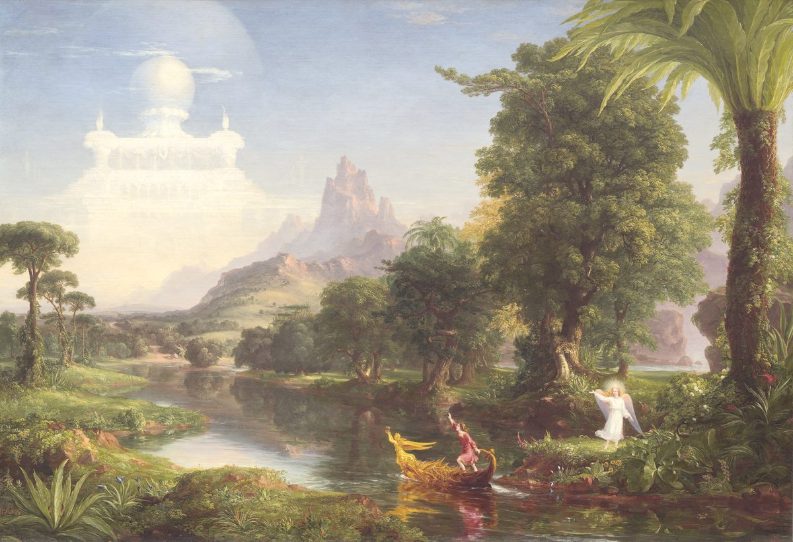

- База знаний
- Практики
- Остальные практики
- Главы моей жизни
Практика·30 минут·без меня
Главы моей жизни
Оглавление своей жизни: главы, высшая точка, низшая точка, поворот. Исследователи нашли связь: то, как человек рассказывает свою жизнь, связано с самочувствием. Что рассказ влияет на самочувствие, а не наоборот, не доказано.
На чём стоитНарративная идентичностьранняяОбзор жизниумереннаяОбзор жизни: в основном пожилые люди, часть — с симптомами депрессии; на взрослых в переходе не проверялиметки проверены 26.10.2026Почему так
Нарративная идентичность ранняя обзор
Связь «как человек рассказывает свою жизнь — как ему живётся» описана в обзоре исследователей этого направления. Это связь, а не доказанная причина. Упражнения «пересобрать свою историю» прямо не проверяли.
Исследование: Adler и соавт., 2016 · на ком проверяли: в основном студенты и взрослые без расстройств
Обзор жизни умеренная мета-анализ
Два больших мета-анализа (128 и 195 исследований): малый или средний эффект на депрессию и благополучие, но почти всё — у пожилых людей.
Исследование: Pinquart, Forstmeier, 2012 · на ком проверяли: в основном пожилые люди, часть — с симптомами депрессии; на взрослых в переходе не проверяли
Метка говорит, насколько исследован метод, а не как он сработает у тебя. Что значат метки

- На руках
- Оглавление и три ключевые сцены.
- Откуда
- последней строкой — название следующей главы, его придумываешь ты.
- Это упражнение
- моя адаптация.
- В «Переходе»
- ближе всего к ней неделя 2: Где у тебя уже получалось.
- Напиши оглавление: 5–8 глав с названиями.
- Опиши одну высшую точку жизни.
- Опиши одну низшую точку и что помогло её пережить.
- Опиши поворот: момент, после которого всё стало иначе.
- Допиши название следующей главы.
Если не получается начать. Придумай название только для первой главы.
Глава 1. Двор и гаражи
Глава 2. Музыкальная школа
Глава 3. Первая работа
Глава 4. Большая компания
Глава 5. Пауза
Глава 6. Новое ремесло
Ночь после первого большого проекта: команда, победа, ощущение, что могу всё.
Зима, когда закрыли отдел. Помогли прогулки и один друг, который звонил каждый день.
Глава 7. Делать руками, без спешки.
Рядом
Заметили ошибку или устаревшее — напишите в Telegram.
Каждую практику можно сделать без меня. В «Переходе» я подбираю их под тебя, и найденное складывается в выбор дела и первый шаг. Как устроен «Переход» →